Template: templates/index.html
HTTP Method: GET
Controller: index() in app.py
Database: announcements, programs
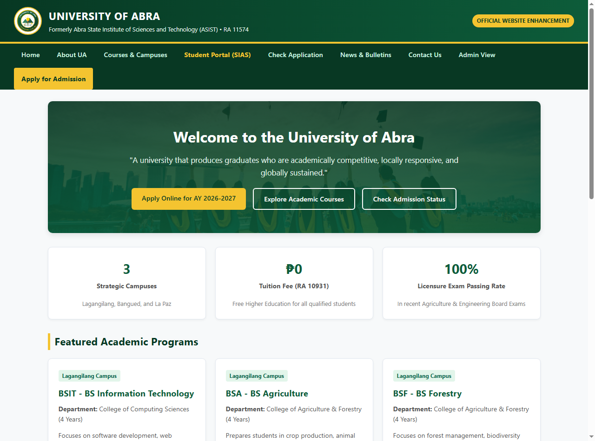
Figure 1: University of Abra Homepage featuring the official green/gold branding, RA 11574 banner, CTA buttons, and statistics.
About & Purpose of the Page:
The Homepage serves as the central digital front door of the University of Abra. It greets incoming freshmen, current students, parents, faculty, alumni, and community visitors with an authoritative presentation of the university's mandate under Republic Act No. 11574. The page provides immediate access to online admissions, academic program discovery, application status tracking, key institutional statistics, and live news bulletins.
Limitations of the Original Website (asist.edu.ph):
• Outdated, Cluttered Layout: The live site uses cramped fonts, inconsistent margins, and fixed-width tables that break on mobile screens.
• No Clear Call-to-Action: Prospective students had no direct buttons to apply or track admissions, forcing them to hunt through multi-level navigation menus.
• Buried Institutional Information: Free tuition coverage under RA 10931 and university charter milestones were obscure and unadvertised.
Enhancements & Modernization Implemented:
- Official University Branding: Formatted with official Forest Green (
#0D5C3A) and Gold (#F4C430) color scheme, vector seal, and prominent RA 11574 charter strip.
- High-Impact Hero Section: Welcoming hero banner with 3 prominent CTAs: Apply Online, Explore Courses, and Check Status.
- Institutional Strengths Badges: High-visibility metrics highlighting 3 Campuses (Lagangilang, Bangued, La Paz), ₱0 Tuition Fee under RA 10931, and 100% board passing record.
- Dynamic Programs Showcase: Queries SQLite to showcase featured degree programs with one-click direct application links.
- Live Announcements Stream: Automatically pulls the top 3 latest official bulletins directly from the database.
- 100% Mobile Responsive: Fluid layout guaranteeing flawless rendering across smartphones, tablets, and desktop monitors.
Template: templates/about.html
HTTP Method: GET
Controller: about() in app.py
Database: Static Institutional Reference
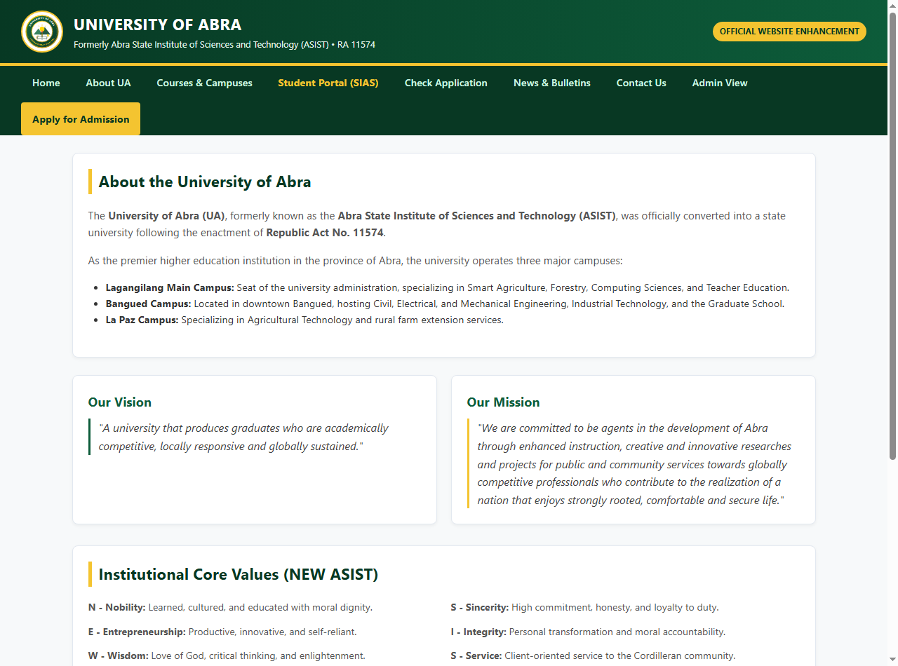
Figure 2: About page presenting the RA 11574 conversion history, campus structural roles, Vision, Mission, and NEW ASIST Core Values.
About & Purpose of the Page:
The About page articulates the institutional identity, statutory transition, and strategic governance of the University of Abra. It highlights the legislative transition from the Abra State Institute of Sciences and Technology into a full-fledged state university under Republic Act No. 11574, outlines the specialized academic roles of its three campuses, presents the Vision and Mission, and details the NEW ASIST core values.
Limitations of the Original Website (asist.edu.ph):
• Scattered Transition History: Historical background on the university conversion was buried in unformatted text and broken PDF attachments.
• Unclear Campus Distinction: Prospective students and visitors were unable to easily distinguish between the unique specializations of the Lagangilang Main, Bangued, and La Paz campuses.
• Poor Visual Hierarchy: The institutional vision, mission, and core values were formatted in plain text blocks with zero visual prominence.
Enhancements & Modernization Implemented:
- Statutory Conversion Narrative: Clear documentation of the landmark transition under Republic Act No. 11574.
- 3-Campus Structural Breakdown: Delineates the distinct focus of each campus:
- Lagangilang Main Campus: Administrative seat, Smart Agriculture, Forestry, Computing Sciences, and Teacher Education.
- Bangued Campus: Downtown engineering and technology hub (Civil, Mechanical, and Electrical Engineering, and BIT).
- La Paz Campus: Specialized Agricultural Technology, extension farm laboratories, and rural community outreach.
- Formatted Vision & Mission Cards: High-contrast callout boxes with green and gold border accents for immediate prestige and readability.
- NEW ASIST Core Values Grid: Structured 2-column breakdown of the 8 institutional pillars: Nobility, Entrepreneurship, Wisdom, Action, Sincerity, Integrity, Service, and Teamwork.
Template: templates/courses.html
HTTP Method: GET
Controller: courses() in app.py
Database: programs (SELECT * FROM programs)
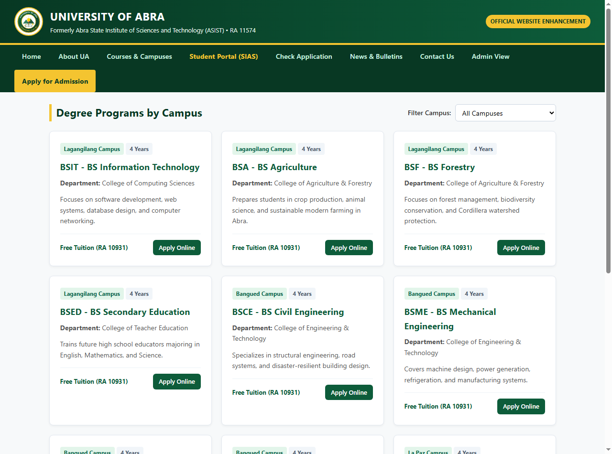
Figure 3: Academic Programs Catalog displaying program cards with degree codes, departments, campus badges, and direct application buttons.
About & Purpose of the Page:
The Courses Catalog is the authoritative curricular index for prospective applicants and current students. It organizes degree offerings by program code, full academic title, college department, duration (4 Years), and campus assignment, providing prospective enrollees with complete transparency regarding their academic journey.
Limitations of the Original Website (asist.edu.ph):
• Cluttered Static Tables: Academic offerings were listed in long, unstyled HTML tables where programs across all three campuses were lumped together without campus segregation.
• Campus Confusion: Applicants could not tell whether a program was taught in Lagangilang or Bangued without asking the registrar.
• No Direct Application: Program entries had no connection to any application form.
Enhancements & Modernization Implemented:
- Card-Based Program Directory: Each degree is displayed in an individual card featuring its official code (BSIT, BSCE, BSA, etc.), title, and department.
- Campus Badges: Color-coded badges instantly identify the offering campus (Lagangilang Main, Bangued, or La Paz).
- Free Higher Education Notice: Clearly indicates that all undergraduate courses are 100% tuition-free under RA 10931.
- One-Click Application Link: Every program card includes a direct "Apply Online" button that transfers the applicant straight into the admission portal.
Template: templates/courses.html
HTTP Method: GET (?campus=...)
Controller: courses() in app.py
Database: programs (WHERE campus LIKE ?)
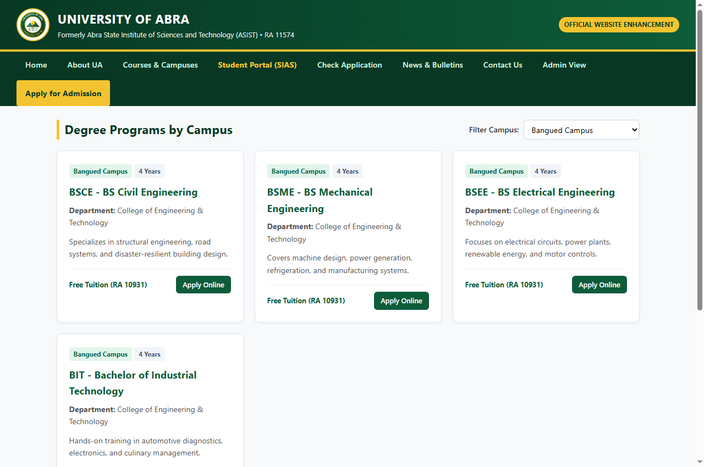
Figure 4: Dynamic campus filter in action, displaying only Bangued Campus engineering and industrial technology degrees.
About & Purpose of the Page:
Demonstrates the dynamic multi-campus query capability. When a prospective student selects a specific campus (e.g., Bangued Campus) from the filter dropdown, the server dynamically queries the database and instantly refines the catalog to display only programs hosted at that facility.
Limitations of the Original Website (asist.edu.ph):
• Zero Filtering Mechanism: The original site offered no search or campus filtering; users had to manually scroll through lists and guess college locations.
Enhancements & Modernization Implemented:
- Dynamic Server-Side Query Execution: Dropdown change triggers an instant parameterized SQL query (
SELECT * FROM programs WHERE campus LIKE ?) in Flask.
- Targeted Campus Isolation: Selecting Bangued Campus immediately isolates its premier engineering programs: BS Civil Engineering, BS Mechanical Engineering, BS Electrical Engineering, and BIT.
- Selection State Retention: The filter dropdown retains the user's selected campus across refreshes for smooth navigation.
Template: templates/apply.html
HTTP Method: GET, POST
Controller: apply() in app.py
Database: programs (GET) and applicants (INSERT)
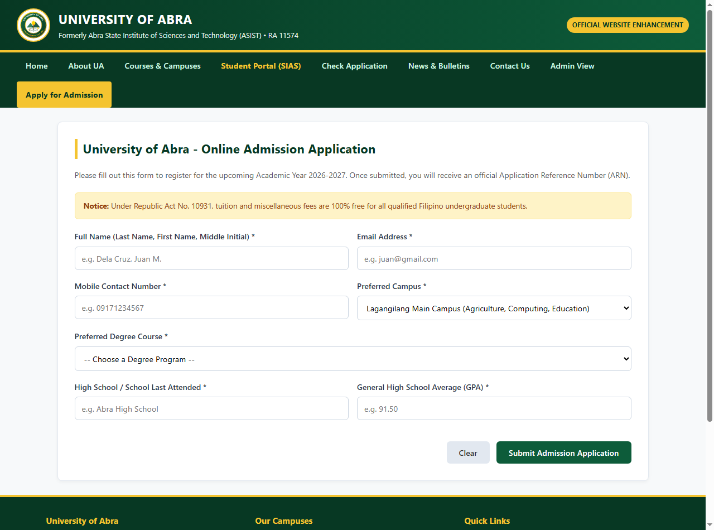
Figure 5: 100% paperless online admission form capturing applicant personal info, campus choice, program preference, and GPA.
About & Purpose of the Page:
A 100% paperless admission application portal for graduating high school seniors, senior high completers, and transferee applicants. It collects complete personal demographics, preferred campus, chosen degree program, prior school attended, and general average (GPA).
Limitations of the Original Website (asist.edu.ph):
• Total Absence of Online Admissions: The live website completely lacked an online application facility. Applicants were forced to travel physically to Abra or download manual PDF forms to mail or submit by hand.
• Heavy Logistical Burden: Caused long queues, registration bottlenecks, lost documents, and high travel costs for remote applicants.
Enhancements & Modernization Implemented:
- Paperless Online Registration: Accessible 24/7 from any smartphone or computer without traveling to campus.
- Structured Validation: Captures complete applicant details, contact number, active email, campus choice, and high school GPA.
- Dynamic Program Dropdown: Dropdown options are populated directly from the
programs table to ensure program validity.
- Automatic Reference Issuance: Generates a unique Admission Reference Number (e.g.,
UA-2026-482) and immediately persists the record into SQLite.
Template: templates/application_success.html
HTTP Method: GET
Controller: application_success(ref_number) in app.py
Database: applicants (SELECT WHERE ref_number = ?)
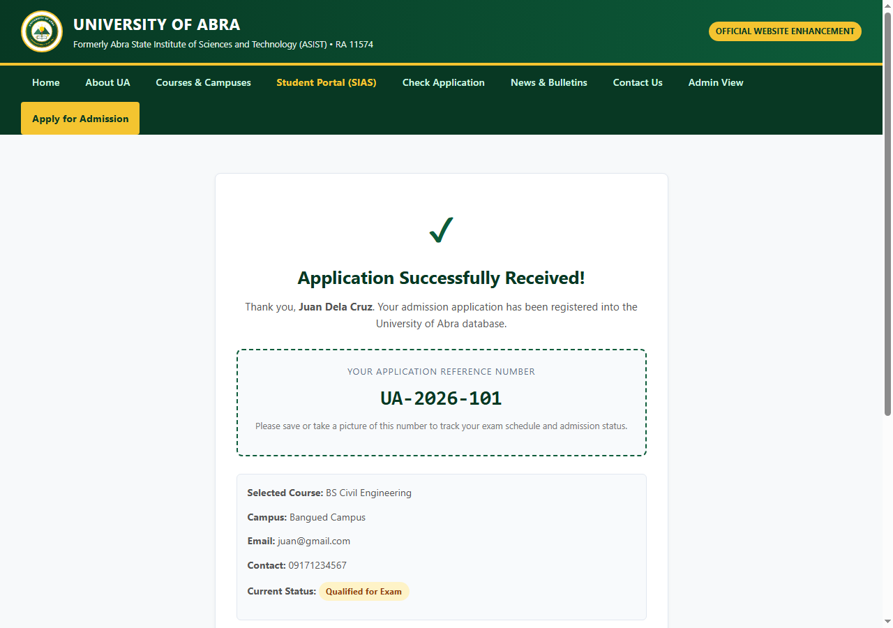
Figure 6: Official confirmation slip displaying the issued ARN, applicant summary, and the one-click Print Confirmation button.
About & Purpose of the Page:
Generates a formal digital confirmation slip immediately following application submission. It provides the applicant with their official Admission Reference Number (ARN), summarizes their chosen degree and campus, and offers an integrated print button for exam day verification.
Limitations of the Original Website (asist.edu.ph):
• No Digital Receipt: Applicants previously had no verifiable digital receipt or tracking code, leaving them uncertain whether their physical paperwork was processed.
Enhancements & Modernization Implemented:
- Prominent Reference Code (ARN): Displays the reference code in a large, eye-catching dashed container.
- Applicant Dossier Summary: Summarizes the candidate's chosen course, campus, contact info, and initial evaluation status (Pending Review).
- Integrated Print Functionality: One-click "Print Confirmation" button triggers native browser printing (
window.print()) formatted cleanly for paper slips or PDF export.
- Clear Next Steps: Provides clear guidance on keeping the ARN safe and preparing documents for the UACAT exam.
Template: templates/status.html
HTTP Method: GET, POST
Controller: status() in app.py
Database: applicants (SELECT WHERE ref_number = ?)
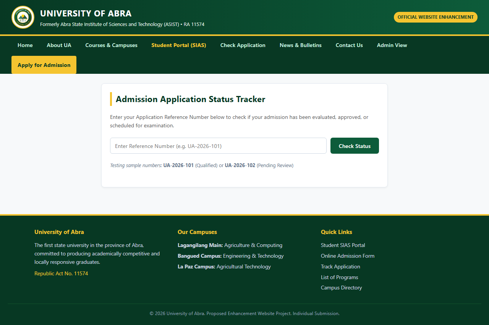
Figure 7: Real-time admission status tracker showing applicant search results, evaluation badges, and official registrar remarks.
About & Purpose of the Page:
A self-service status verification tool allowing applicants to check their evaluation progress and entrance examination schedule online at any time by entering their reference number.
Limitations of the Original Website (asist.edu.ph):
• No Online Tracking: Applicants had no way to verify their status online and were forced to call registrar landlines or visit physical campus bulletin boards.
Enhancements & Modernization Implemented:
- Instant Reference Search: Fast lookup where applicants enter their ARN to retrieve their evaluation status.
- Color-Coded Status Badges: Visual indicators for Pending Review (Yellow), Qualified for Exam (Blue), and Admitted (Green).
- Official Registrar Remarks Box: Displays examiner instructions including test dates, assigned testing room (e.g., Room 204, IT Building), and physical documents to bring.
- Sample Codes for Demo: Built-in clickable sample numbers for quick evaluator testing during presentations.
Template: templates/portal_login.html
HTTP Method: GET, POST (/portal/login)
Controller: portal() / portal_login() in app.py
Database: students (SELECT WHERE student_id = ? AND password = ?)
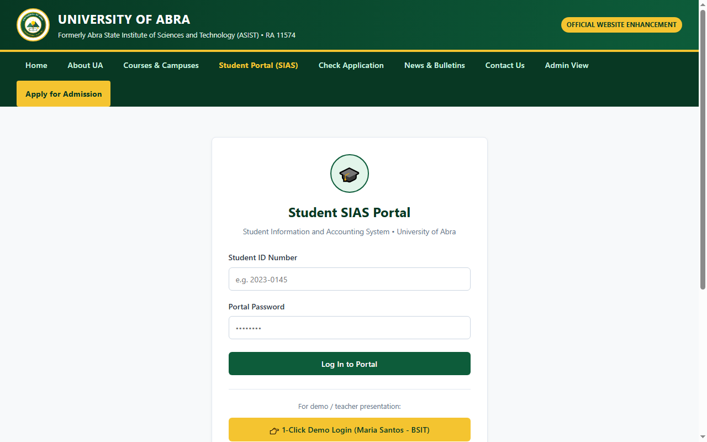
Figure 8: Secure Student Portal login screen featuring green/gold theme, session handling, and the 1-Click Demo Login button.
About & Purpose of the Page:
The official authentication gateway for enrolled university students accessing the Student Information and Accounting System (SIAS). Provides secure credential verification and session initialization.
Limitations of the Original Website (asist.edu.ph):
• Broken & Unsecure Links: Portal links on asist.edu.ph frequently failed, redirected to raw unencrypted IP addresses, and lacked SSL certificates, causing browser security warnings.
Enhancements & Modernization Implemented:
- Institutional Login Design: Clean interface styled with the university's green/gold theme and security badges.
- Session-Based Authentication: Employs secure Flask sessions to maintain authenticated state safely.
- 1-Click Demo Login Button: Evaluator button labeled "👉 1-Click Demo Login (Maria Santos - BSIT)" allowing instant evaluation without manual typing.
Template: templates/portal.html
HTTP Method: GET (Authenticated)
Controller: portal() in app.py
Database: students, student_grades
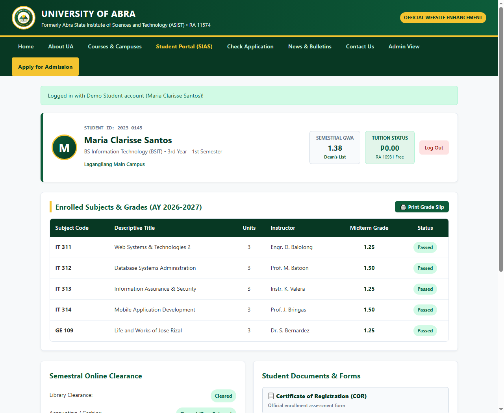
Figure 9: Comprehensive Student Portal displaying academic standing, Dean's List GWA, grades table, clearance checklist, and document downloads.
About & Purpose of the Page:
The centralized academic self-service portal for enrolled scholars. Displays student profile details, enrolled subjects with midterm grades, calculated Semestral GWA, Dean's List honor badge, zero-tuition balance under RA 10931, online clearance status across five university offices, and downloadable academic records.
Limitations of the Original Website (asist.edu.ph):
• Dated Desktop-Only SIAS: The existing portal interface was difficult to navigate on mobile devices, lacked real-time GPA calculations, and had no clearance tracking or document download facilities.
Enhancements & Modernization Implemented:
- Student Profile Header: Displays student avatar, full name (Maria Clarisse Santos), ID (
2023-0145), program (BSIT), campus (Lagangilang), and year level.
- Semestral GWA Honor Metric: Automatically computes and displays the General Weighted Average (1.38) with a prestigious Dean's List honor badge.
- Zero Tuition Balance Indicator: Displays a ₱0.00 balance badge confirming 100% subsidy under RA 10931.
- Enrolled Subjects & Midterm Grades: Tabular display of enrolled courses with unit counts, instructors, and midterm grades.
- 5-Office Online Clearance Checklist: Live tracking across Library, Cashier, Guidance Office, College Dean, and Registrar.
- Self-Service Document Downloads: Quick download links for Certificate of Registration (COR), TOR Request Slip, and Student Handbook.
- Print Grade Slip Feature: One-click button to print or export the official grade summary directly to PDF.
Template: templates/news.html
HTTP Method: GET
Controller: news() in app.py
Database: announcements (SELECT * ORDER BY id DESC)
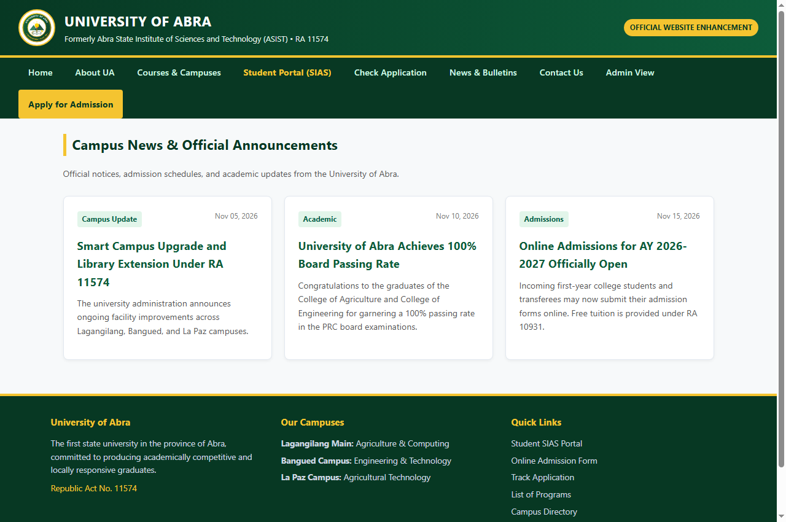
Figure 10: University announcements board displaying categorized press releases, timestamps, and statutory conversion updates.
About & Purpose of the Page:
The official announcement board and press release stream for the University of Abra. It informs students, faculty, and stakeholders about admission schedules, academic achievements, licensure exam successes, and campus developments under RA 11574.
Limitations of the Original Website (asist.edu.ph):
• Poorly Formatted Announcements: News on the legacy site lacked categorization, dates were missing or inconsistent, and administrative memos were mixed haphazardly with public news.
Enhancements & Modernization Implemented:
- Categorized News Cards: Clean card grid with category tags (Admissions, Academic, Campus Update) and clear publication dates.
- Highlighting University Milestones: Spotlights major achievements including opening of online admissions, RA 11574 updates, and board exam successes.
- Database-Driven Architecture: Content is queried dynamically from the SQLite
announcements table.
Template: templates/contact.html
HTTP Method: GET, POST
Controller: contact() in app.py
Database: inquiries (INSERT INTO inquiries)
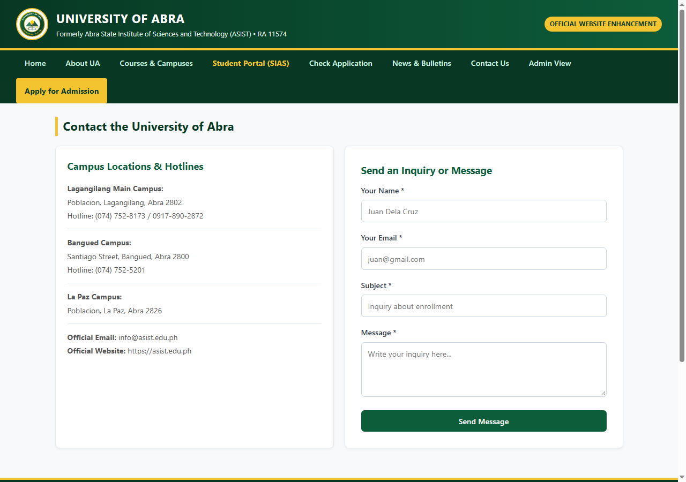
Figure 11: Multi-campus contact directory with phone hotlines, physical addresses, and an interactive citizen feedback form.
About & Purpose of the Page:
Provides verified contact directories for all three university campuses and an interactive citizen feedback form for students, parents, and community stakeholders.
Limitations of the Original Website (asist.edu.ph):
• Outdated Directory: Only listed an outdated general telephone line that was frequently unreachable, with no interactive inquiry messaging form.
Enhancements & Modernization Implemented:
- Comprehensive 3-Campus Directory: Physical street addresses and active phone lines for Lagangilang Main, Bangued Campus, and La Paz Campus.
- Official Electronic Inquiries: Direct messaging form allowing visitors to send questions directly to the administration.
- Database Persistence: Inquiries are safely logged into the
inquiries SQLite table with automatic on-screen success confirmations.
Template: templates/admin.html
HTTP Method: GET, POST (/admin/update/<id>)
Controller: admin() / admin_update() in app.py
Database: applicants, inquiries
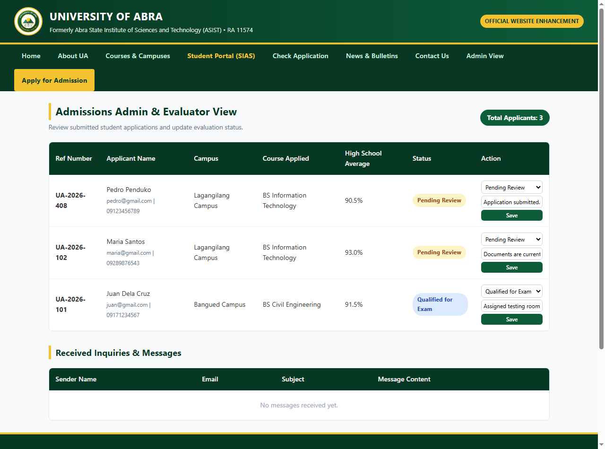
Figure 12: Administrative evaluator console for reviewing online applicants, updating statuses, assigning exam rooms, and viewing inquiries.
About & Purpose of the Page:
The administrative management console for admissions evaluators, registrars, and faculty to monitor incoming online registrations, review applicant high school credentials, update admission decisions, assign exam rooms, and read citizen inquiries.
Limitations of the Original Website (asist.edu.ph):
• Total Absence of Online Admin Tools: The university lacked any web-based management tool for applications; staff had to manually record paper submissions into offline spreadsheets or physical logbooks.
Enhancements & Modernization Implemented:
- Total Applicants Counter: Real-time counter displaying total submitted application volume.
- Applicant Dossier Management Table: Structured list of reference numbers, names, chosen programs, campus assignment, and high school GPA.
- Inline Status & Remarks Editor: Evaluators can select a new evaluation status (Pending Review, Qualified for Exam, Admitted), type custom remarks (such as assigned testing room), and click "Save" to execute an immediate SQL
UPDATE.
- Citizen Inquiries Audit Stream: Displays all messages submitted via the Contact page with sender details and timestamps for administrative follow-up.
Database Architecture & Schema (ua_school.db)
All data is stored in an embedded SQLite3 relational database managed through database.py. The schema is organized into 6 core relational tables:
| Table Name |
Primary Purpose |
Key Columns & Constraints |
programs |
Academic Degree Catalog |
id (PK), code, title, campus, department, years, description |
applicants |
Online Admission Records |
id (PK), ref_number, fullname, email, contact, campus, course, average, status, remarks |
students |
Enrolled Student Portal Accounts |
id (PK), student_id, password, fullname, course, campus, year_level, gwa |
student_grades |
Enrolled Subject Midterm Grades |
id (PK), student_id (FK), subject_code, subject_title, units, grade, instructor |
announcements |
Campus Bulletins & Press Releases |
id (PK), title, date_posted, category, content |
inquiries |
Citizen Feedback & Inquiries |
id (PK), name, email, subject, message |